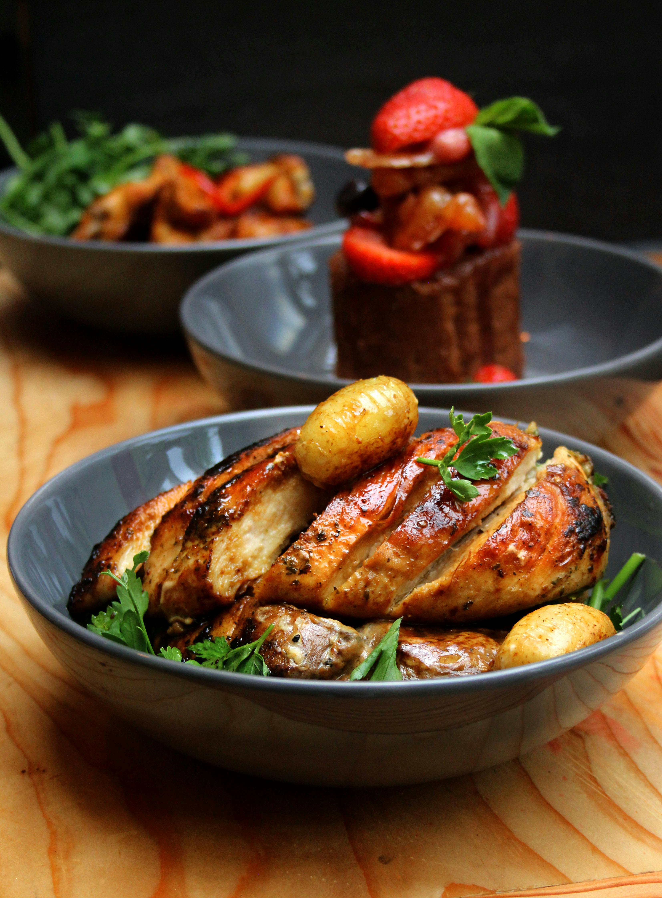

Chicken Breast

Description
This chicken breast recipe is a quick and healthy option, perfect for weeknight dinners.
Juicy, tender chicken breasts are seasoned with a blend of herbs and spices, then pan-seared or baked to golden perfection.
With just a few simple ingredients, it delivers bold flavor while keeping prep and cleanup minimal.
Serve it with roasted vegetables, rice, or a fresh salad for a complete and satisfying meal.
Ingredients
- 2 boneless, skinned chicken breasts
- 1 tablespoon olive oil
- 1 teaspoon garlic powder
- 1 teaspoon paprika
- ½ teaspoon dried oregano
- ½ teaspoon salt
- ¼ teaspoon black pepper
Steps
- Prep the Chicken: Pat the chicken breasts dry with paper towels. If they are very thick, you can slice them in half horizontally or pound them to even thickness for quicker, more even cooking.
- Season: In a small bowl, mix together garlic powder, paprika, oregano, salt, and black pepper. Rub both sides of the chicken breasts with olive oil, then coat them evenly with the seasoning mixture.
-
Cook:
- Pan-sear Method: Heat a skillet over medium heat. Add a small amount of oil, then cook the chicken breasts for 5–7 minutes per side, or until golden brown and the internal temperature reaches 165°F (74°C).
- Oven-baked Method: Preheat the oven to 400°F (200°C). Place the seasoned chicken breasts on a baking sheet lined with parchment paper or foil. Bake for 20–25 minutes, or until fully cooked.
- Rest: Remove the chicken from the heat and let it rest for 5 minutes to retain juices.
- Serve: Slice and serve with your favorite sides. Optional: Garnish with fresh parsley or a squeeze of lemon juice for extra flavor.
Home